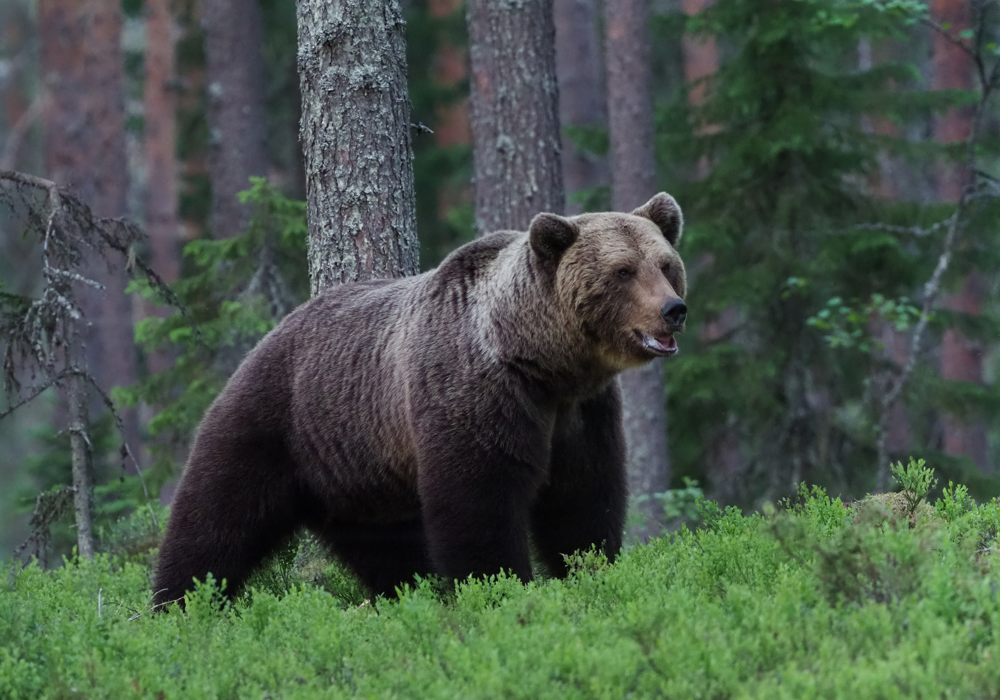
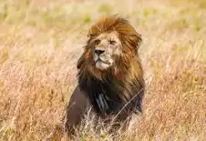
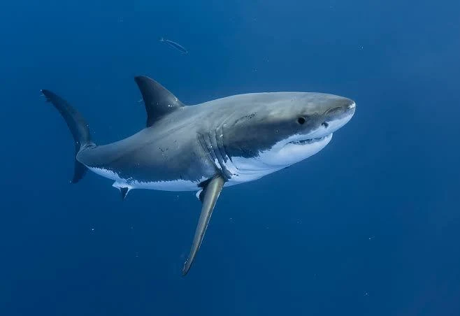

Animales
Oso
Son cazadores y territoriales
- Peso: 80-600 kg
- Longitud: 1.4-2.8 m
- Principales fuentes de alimentacion: frutas, insectos, raices, peces y otros animales
- Esperanza de vida: aproximadamente 20-30 años

Leon
Son carnivoros y se considera el rey de la selva
- Peso: 120-250 kg
- Longitud: 1.7-2.5 m
- Principales fuentes de alimentacion: carne; principalmente antílopes, cebras y otros mamíferos
- Esperanza de vida: aproximadamente 10-15 años

Tiburon
Es un pez depredador marino con un esqueleto formado principalmente por cartílago.
Existen numerosas especies de diferentes tamaños y hábitats.
- Peso: 500-1000 kg
- Longitud: 4-6 m
- Principales fuentes de alimentacion: peces, calamares, crustáceos y mamíferos marinos
- Esperanza de vida: aproximadamente 40-70 años
